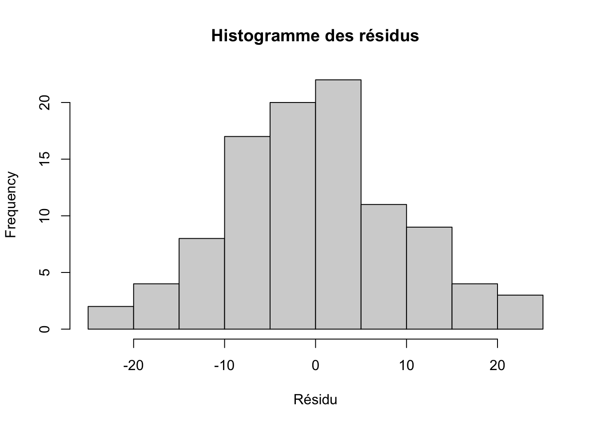

L’algorithme cherche donc à rendre les résidus globalement aussi petits que possible (au sens des carrés).
4.2 Hypothèses du modèle = hypothèses sur les résidus
Dans le modèle linéaire gaussien, on fait des hypothèses sur les \(\varepsilon_i\).
En pratique, on vérifie ces hypothèses sur les résidus \[e_i\] :
4.2.1 Moyenne nulle
Théorique :
\[
E(\varepsilon_i) = 0
\]
En pratique : les résidus doivent osciller autour de 0.
4.2.2 Variance constante (homoscédasticité)
Théorique :
\[
\text{Var}(\varepsilon_i) = \sigma^2 \quad \text{(indépendante de } X_i\text{)}
\]
En pratique : la dispersion des résidus ne doit pas augmenter ou diminuer systématiquement avec les valeurs prédites.
4.2.3 Indépendance
Théorique : les \(\varepsilon_i\) sont indépendants.
En pratique : les résidus ne doivent pas montrer de structure dans le temps, par centre, par patient, etc.
4.2.4 Normalité (dans le cadre gaussien)
Théorique :
\[
\varepsilon_i \sim \mathcal{N}(0,\sigma^2)
\]
En pratique : l’histogramme et le QQ-plot des résidus doivent être compatibles avec une loi normale.
Toute l’analyse de diagnostic (graphiques de résidus, tests) repose sur le comportement des résidus.
⸻
5 Exemple concret en R avec un jeu de données fictif
On crée un jeu de données fictif simple :
\(X\) = âge du patient, entre 20 et 80 ans
\(Y\) = pression artérielle systolique (PAS, en mmHg)
On suppose que le « vrai » modèle (utilisé pour simuler les données) est :
\[
Y_i = 90 + 0{,}6 X_i + \varepsilon_i
\]
avec :
\[
\varepsilon_i \sim \mathcal{N}(0, 10^2)
\]
# Création d'un jeu de données fictifn <-100# nombre de patientsage <-runif(n, min =20, max =80) # âges entre 20 et 80 ans# Paramètres "vrais" du modèle de simulationbeta_0 <-90# interceptbeta_1 <-0.6# pentesigma <-10# écart-type de l'erreur# Terme d'erreur théorique simuléepsilon <-rnorm(n, mean =0, sd = sigma)# Valeur observée de PAS (simulée)PAS <- beta_0 + beta_1 * age + epsilon# Data frame finaldf <-data.frame(age = age,PAS = PAS)head(df)
age PAS
1 37.25465 114.8860
2 67.29831 130.0935
3 44.53862 116.2945
4 72.98104 147.4746
5 76.42804 133.5991
6 22.73339 118.8047
5.1 Ajuster un modèle linéaire et récupérer les résidus
points au-dessus de la ligne rouge : PAS observée plus élevée que prévu
points en dessous : PAS observée plus basse que prévu
si le modèle est correct, le nuage doit être « diffus » autour de la ligne à 0, sans structure évidente
5.2 Histogramme et QQ-plot des résidus
On regarde la distribution des résidus.
hist( df$residu,breaks =15,main ="Histogramme des résidus",xlab ="Résidu")

#| label: residuals-qqplot#| echo: trueqqnorm(df$residu, main ="QQ-plot des résidus")qqline(df$residu, col ="red", lwd =2)
Idéalement :
l’histogramme est approximativement symétrique autour de 0
le QQ-plot montre les points proches de la droite : compatible avec une loi normale
⸻
6 Lien avec les modèles plus complexes
Dans des modèles plus complexes (GLM, modèles linéaires mixtes, etc.), on garde la même idée de base :
\[
\text{résidu} = \text{valeur observée} - \text{valeur prédite (ou espérée) par le modèle}
\]
Dans un GLM (logistique, Poisson), la définition est adaptée pour tenir compte du fait que la variance dépend de la moyenne (résidus de Pearson, de déviance, etc.).
Dans un modèle linéaire mixte, on définit les résidus après avoir pris en compte :
les effets fixes (âge, sexe, traitement…)
les effets aléatoires (patient, centre, etc.)
Mais le sens reste le même : les résidus mesurent ce qui n’est pas expliqué par le modèle pour chaque observation.
⸻
7 Résumé
Pour chaque observation \(i\) :
\[
e_i = y_i - \hat{y}_i
\]
un résidu, c’est la différence entre la valeur observée et la valeur prédite
les résidus sont au cœur :
de l’estimation (moindres carrés minimisent la somme des carrés des résidus)
du diagnostic du modèle (vérifier les hypothèses sur les erreurs)
Le terme d’erreur \(\varepsilon_i\) est théorique,
le résidu \(e_i\) est observable et c’est lui qu’on regarde dans les sorties et les graphiques.